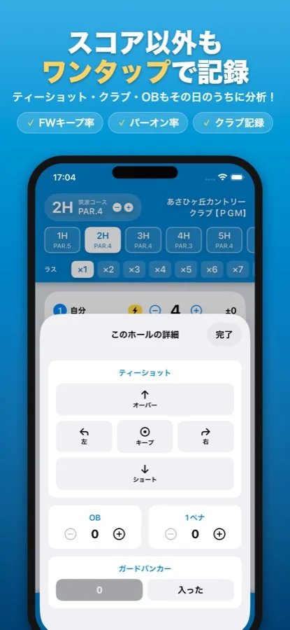

ゴルフスコア管理アプリとしても本格派
ゲームの計算だけじゃない。スコア記録と分析は、専用アプリ以上を目指しました。
いま打つホールの
自分の過去の成績が
その場で見える
同じゴルフ場でラウンドすると、スコア画面にそのホールの自分の平均スコアとOB率を自動表示。「ここはいつも叩いてる…」が数字でわかるから、クラブ選びも攻め方も変わります。
- 設定は不要。ラウンドを保存していくだけで、次に同じコースを回ったとき自動で表示されます。
- 履歴を何年でも遡れる。タップすれば過去の記録を1ラウンドずつ。打数・パット・使ったクラブ・OB・獲得ポイントまでホール単位で振り返れます（履歴の閲覧はプレミアム）。


- スコア以外もワンタップ記録。ティーショットの方向（キープ/左/右/オーバー/ショート）、OB・ペナルティ、ガードバンカー、使用クラブまでその場で残せます。
- 記録するだけでプレーを分析。パーオン率・ボギーオン率・リカバリー率・サンドセーブ率がわかります。
- 平均パットはパーオン時/ボギーオン時で分けて表示。Par3・Par4・Par5別の平均スコアで、得意・苦手もひと目でわかります。
- 入力は一度だけ。ゲームのポイント計算とスコア・詳細の記録が同時に進むので、二度手間がありません。


GDO・楽天・GN+と何が違うのか、各社の公式情報で比べました。